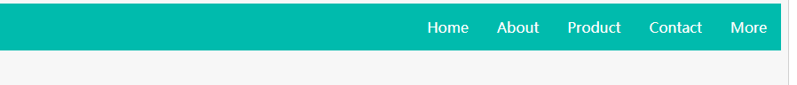

一、 基本概念

1. 元素会排列在主轴（main-axis）或纵轴（cross-axis）上，方向start —> end
需要注意的是，main-axis并不一定就是水平的，这要取决于flex-direction属性
2. flex属性设置分为两部分：容器和项目
#####容器属性(flex container)：
.container{
display: flex; //inline-flex
flex-direction: row | row-reverse | column | column-reverse;
//设定主轴，即元素排列方向（default: row; 由左至右）
flex-wrap: nowrap | wrap | wrap-reverse;
//默认情况下，flex元素倾向于排列在一行(nowrap)，可通过设置flex-reverse来改变,其中wrap-reverse
//是从下向上排列，即前面的元素在底行，后面排列不下的元素换行到上方(end->start方向)的一行
flex-flow: <'flex-direction>' || <'flex-wrap>';
//是flex-direction和flex-wrap属性的合写形式
justify-content: flex-start | flex-end | center | space-around | space-between | space-evenly;
//指定元素在主轴上的分布方式，用于分配剩余的额外空间，默认为flex-start
align-items: flex-start | flex-end | center | stretch | baseline;
//指定元素在纵轴上的分布方式，默认为stretch
align-content: flex-start | flex-end | center | stretch | space-between | space- around;
//将每一行视为一个整体，指定每一行在纵轴上的分布方式，类似justify-content，默认stretch
}
|
justify-content：
align-content: 
子元素属性(flex items):
.item{
order: <integer>; //元素在容器内排列的顺序，默认都为0
flex-grow: <number>; //决定了元素在容器内所占用剩余空间的比例（无单位，如‘2’所占剩余空间是1的 //两倍），默认为0
flex-shrink: <number>; //元素可以收缩的能力，默认为1，负值无效
flex-basis: <length> | auto;
//在未分配剩余空间时元素的大小
flex: none | [ <'flex-grow'> <'flex-shrink'>? || <'flex-basis'> ];
//合写方法，flex-shrink、flex-basis可不写
align-self: auto | flex-start | flex-end | center | baseline | stretch;
//重新定义某一特定元素在纵轴上的分步方式
}
|
flex-basis: 
注意：float、clear和vertical-align属性对flex item无效
二、 练习
1. 实现页面上方导航栏，宽度大于800px时，位于右侧；宽度500px~800px时居中；宽度小于500px时纵向显示
<div class="nav">
<ul>
<li>Home</li>
<li>About</li>
<li>Product</li>
<li>Contact</li>
<li>More</li>
</ul>
</div>
|
.nav{
background-color: #00bbad;
color: #fff;
}
.nav>ul{
list-style-type: none;
display: flex;
flex-flow: row wrap;
justify-content: flex-end;
}
.nav>ul>li{
padding: 1rem;
cursor: pointer;
}
.nav>ul>li:hover{
background-color: lightblue;
}
@media all and (max-width: 800px){
.nav>ul{
justify-content: space-around;
}
}
@media all and (max-width: 500px){
.nav>ul{
flex-direction: column;
text-align: center;
}
}
|

2. 改变整体在不同分辨率下的布局
具体要求：
结构：
- header
- article
- aside1
- aside2
- footer


<div class="container">
<div class="header">header</div>
<div class="article"><p>Block formatting context直译为"块级格式化上下文"。它是一个独立的渲染区域，只有Block-level box参与， 它规定了内部的Block-level Box如何布局，并且与这个区域外部毫不相干。通俗地讲，BFC是一个容器，用于管理块级元素。</p>
</div>
<div class="aside aside1">aside1</div>
<div class="aside aside2">aside2</div>
<div class="footer">footer</div>
</div>
|
.container{
display: flex;
flex-flow: row wrap;
text-align: center;
}
.container>*{
padding: 10px;
flex: 1 100%;
}
.header{
background-color: lightblue;
}
.article{
background-color: lightgreen;
text-align: left;
}
.aside1{
background-color: yellow;
}
.aside2{
background-color: red;
}
.footer{
background-color: grey;
}
@media all and (min-width: 600px){
.aside{flex: 1 0 0;}
}
@media all and (min-width: 800px){
.article{
flex: 3 0px;
}
.aside1{
order: 1;
}
.article{
order: 2;
}
.aside2{
order: 3;
}
.footer{
order: 4;
}
}
|
参考资料：https://css-tricks.com/snippets/css/a-guide-to-flexbox/